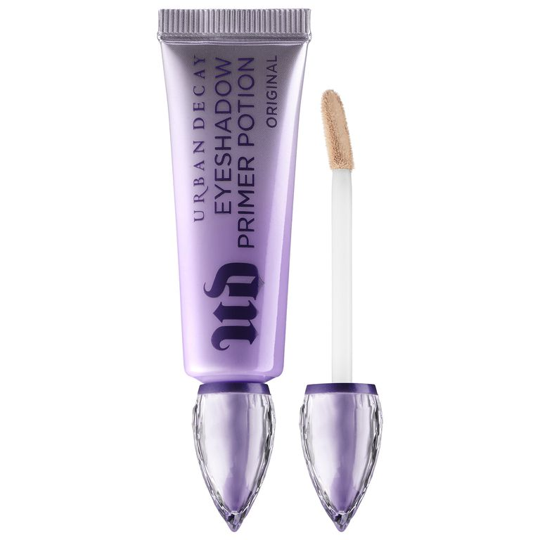
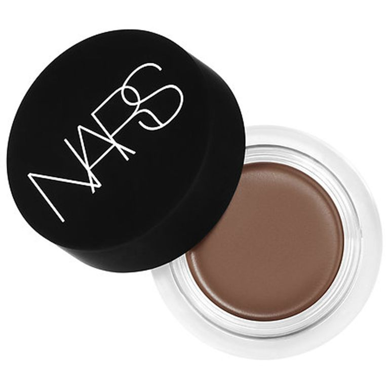
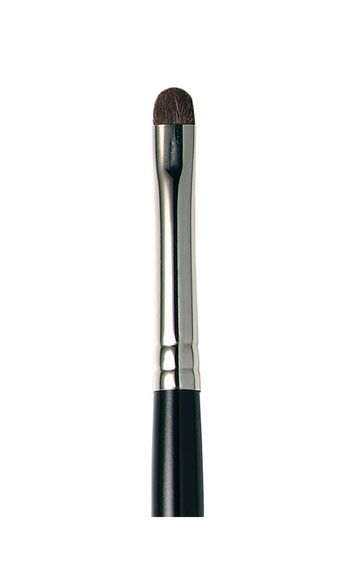
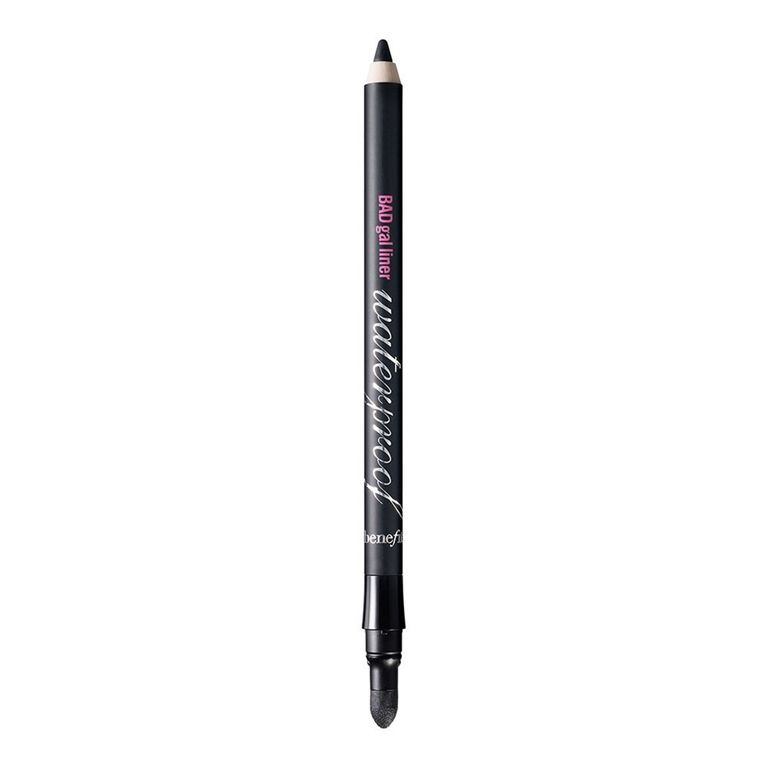
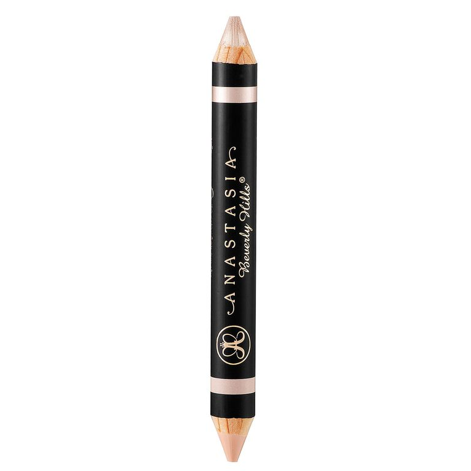

Step 1: Primer
Nothing's worse than a smoky eye that travels, smears, and settles into fine lines one hour into the night. To keep your shadow from budging, gently pat some primer over your lids and under your eyes to ensure your makeup stays put past last call!
Urban Decay Eye Shadow Primer Potion, $20.
Step 2: Concealer + Powder
When you're going for an overall smoky look, dark circles tend to kill the sexiness of a smoky eye (you could end up looking bruised versus vampy). To neutralize any shadows under your eyes, blend a creamy concealer (with a thicker consistency compared to liquid, since it won't settle into creases as much) atop your under-eye area using your ring finger. Pro makeup artist secret: After blending on concealer, use a fluffy brush to tap translucent powder on the under-eye area. The powder will catch loose particles as you apply your eye shadow — then, when you've completed the look, gently swipe off the powder with a tissue. Flawlessness!
Nars Soft Matte Complete Concealer, $30.
Step 3: Dark Shadow

Blend a dark shadow from your lashes to the crease of your eye, and then use a small, angled brush to apply the shadow along your lower lash line. The fun part? Your smoky shade doesn't have to be black. Instead, try gray, navy, shimmery brown, plum, or forest green, which will all add a sexy element of surprise to your look.
Tarte Cosmetics Make Believe in Yourself Eye and Cheek Palette, $40.
Step 4: Smudge
A smoky eye shouldn't have any harsh lines; it should be softly blended at the edges. Using a Q-tip or a smudge brush, lightly smudge the shadow at the crease and along bottom lashes.
Laura Mercier Smudge Brush, $24.
Step 5: Eye Liner
Now that your color is in place, define your eye with a creamy black eye pencil. Drag it along top and bottom lash lines, making sure there's no skin showing between lashes and the line. For an extra-sultry effect, line your inner bottom lash line, too (gently pull under-eye skin downward to get access). Smoldering!
Benefit BADgal Khol Pencil, $20.
Step 6: Highlighter
To open up your eye area amidst all the dark, smoky shadow (and add a twinkly radiance), blend a shimmery highlighter along your brow bone and over the inner "V" corner of eyes. If you have fair to medium skin, try a pearl hue; darker complexions look vampy in Champagne shades.
Anastasia Beverly Hills Highlighting Duo Pencil, $23.
Step 7: Curl Lashes

A flirty, full-on fringe is a must when creating a sultry, smoky eye. Using an eyelash curler, gently clamp down at the base of your lashes, hold for five seconds, and release. If you're truly adventurous, blast the curler with heat from a blow-dryer before curling (heating up the tool makes your curl last longer!).
Japonesque Pink Go Curl Eyelash Curler, $10.
Step 8: Mascara

No smoky eye is complete without lush, long, thick, bat-worthy lashes! Create an out-to-there effect with this squeezable mascara tube that allows you to control how much product you load onto the brush head for the ultimate application.
Dior DiorShow Pump 'N' Volume Mascara, $29.50.